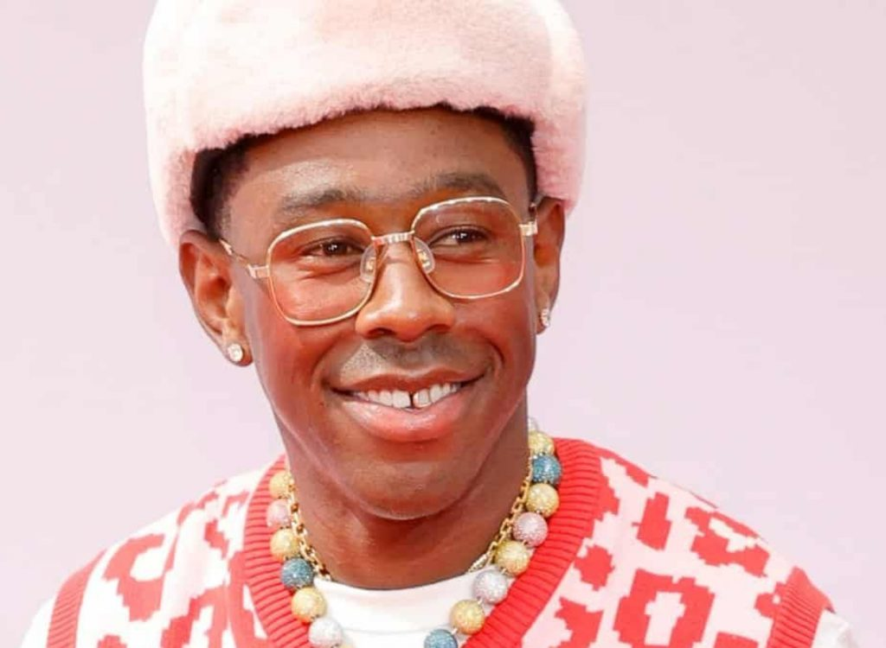

Tyler Gregory Okonma (6 de marzo de 1991) Rapero y compositor estadounidense, conocido artísticamente como Tyler, the Creator. Líder del colectivo Odd Future (OFWGKTA), Tyler haría su debut en 2009 con el mixtape “Bastard”. Dos años más tarde alcanza la fama con “Goblin” y su sencillo promocional “Yonkers” y en 2012, crea el festival Camp Flog Gnaw Carnival. Es conocido también por sus álbumes “Flower Boy” (2017) e “Igor” (2019).
En 2015, lanza “Cherry Bomb” y se presenta en Coachella y en 2017, hace su regreso con “Flower Boy”, álbum que mostraría su lado más maduro. En este aparecieron sus hits “Who Dat Boy” con ASAP Rocky, “I Ain’t Got Time!” y “See You Again”. El álbum debutaría además en el puesto número 2 del Billboard 200. Aunque fue nominado al Grammy al mejor álbum, Tyler caería ante Kendrick Lamar por “Damn”. Para finales de marzo de 2018, publica “Okra”, seguido de “435” y “Peach Fuzz”. Ya en mayo de 2019, lanza “Igor”, su quinto álbum de estudio junto al sencillo “Earfquake”. “Igor” se posicionó en el puesto número 1 del Billboard 200 y “Earfquake” alcanzó el puesto n° 13 del Billboard Hot 100, convirtiéndose en su primer sencillo en llegar a esta posición. Por “Igor”, Tyler recibiría el Premio Grammy al mejor álbum de Rap en 2020.
Flower boy(2017): El álbum contó con un excelente recibimiento por parte de la crítica, seguidores y especialistas, con el disco obteniendo la nominación por Mejor Álbum de Rap en los Premios Grammy de 2018. También fue exitoso comercialmente, debutando en el puesto 2 de la lista Billboard 200. Fue incluido entre los mejores álbumes del 2017 y de la década.
Call me if you get loss(2021) El álbum marca un alejamiento de la estética más ligera y conmovedora de Igor (2019) y Flower Boy (2017) a favor de ritmos descarados y rimas crudas, influenciados por la serie de mixtapes Gangsta Grillz de DJ Drama.Fue nombrado entre los mejores álbumes de 2021 por las listas de fin de año de varias publicaciones. El álbum debutó en el número uno en el Billboard 200 de EE. UU., convirtiéndose en el segundo álbum número uno de Tyler, the Creator en dicho país Ganó el premio al Mejor Álbum de Rap en los Premios Grammy de 2022, dándole a Tyler su segundo Grammy
Igor(2019): IGOR (pronunciado EEE-GORE), lanzado el 17 de mayo de 2019, es Tyler, el quinto álbum de estudio del creador (y el autoproclamado sexto álbum) El álbum contiene características de artistas como Kanye West, A $ AP Rocky, Charlie Wilson, CeeLo Green y Playboi Carti e incluye numerosas muestras vocales del comediante Jerrod Carmichael. Temáticamente, el arco del álbum describe la sensación de enamorarse de alguien y comenzar una relación con ellos, obsesionarse un poco con ellos, la relación fracasa, el desamor y el intento de seguir siendo amigos.
Flower boy(2017): El álbum contó con un excelente recibimiento por parte de la crítica, seguidores y especialistas, con el disco obteniendo la nominación por Mejor Álbum de Rap en los Premios Grammy de 2018. También fue exitoso comercialmente, debutando en el puesto 2 de la lista Billboard 200. Fue incluido entre los mejores álbumes del 2017 y de la década.
Call me if you get loss(2021) El álbum marca un alejamiento de la estética más ligera y conmovedora de Igor (2019) y Flower Boy (2017) a favor de ritmos descarados y rimas crudas, influenciados por la serie de mixtapes Gangsta Grillz de DJ Drama.Fue nombrado entre los mejores álbumes de 2021 por las listas de fin de año de varias publicaciones. El álbum debutó en el número uno en el Billboard 200 de EE. UU., convirtiéndose en el segundo álbum número uno de Tyler, the Creator en dicho país Ganó el premio al Mejor Álbum de Rap en los Premios Grammy de 2022, dándole a Tyler su segundo Grammy
Igor(2019): IGOR (pronunciado EEE-GORE), lanzado el 17 de mayo de 2019, es Tyler, el quinto álbum de estudio del creador (y el autoproclamado sexto álbum) El álbum contiene características de artistas como Kanye West, A $ AP Rocky, Charlie Wilson, CeeLo Green y Playboi Carti e incluye numerosas muestras vocales del comediante Jerrod Carmichael. Temáticamente, el arco del álbum describe la sensación de enamorarse de alguien y comenzar una relación con ellos, obsesionarse un poco con ellos, la relación fracasa, el desamor y el intento de seguir siendo amigos.